Manual Supervisor
Panduan memantau pipeline tim, memberi coaching, dan mengelola target di AIna DealDrive.
Cakupan akses Supervisor
Supervisor hanya melihat dan mengelola tim yang ditugaskan kepadanya: Sales anggota tim, pelanggan mereka, transaksi, target, dan analisis tim. Data tim Supervisor lain tidak terlihat. Penempatan Sales ke tim dan perpindahan antartim diatur oleh Admin dealer.
Banyak layar sama dengan layar Sales, misalnya detail transaksi dan ubah tahap. Bagian itu tidak diulang di sini; ikuti tautan ke Manual Sales.
1. Masuk & akun
Cara aktivasi, masuk, lupa password, ganti username, dan ganti password sama untuk semua peran. Lihat Manual Sales, bab 1.
Syarat password: minimal 8 karakter dan harus memuat paling sedikit satu angka dan satu simbol.
3. Beranda
Beranda adalah Dashboard penjualan tim Anda untuk satu bulan. Pilih bulan di Periode laporan lalu klik Tampilkan.
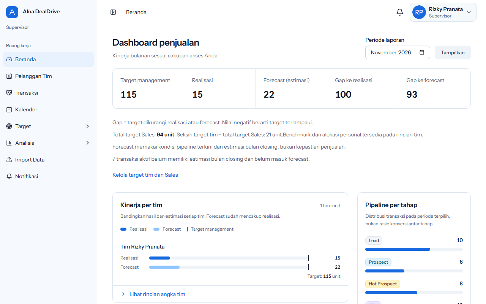
| Angka | Arti |
|---|---|
| Target management | Target tim dari management untuk bulan ini, dalam unit. |
| Realisasi | Jumlah transaksi yang mencapai DO pada bulan ini. |
| Forecast (estimasi) | Realisasi ditambah transaksi aktif yang berbobot. Lihat bab 11. |
| Gap ke realisasi / ke forecast | Target dikurangi realisasi atau forecast. Nilai negatif berarti target terlampaui. |
Di bawah angka utama terdapat:
- Kinerja per tim dan Kinerja per Sales: realisasi dan forecast dibandingkan target. Klik Lihat rincian angka untuk tabelnya.
- Pipeline per tahap: jumlah transaksi pada setiap tahap untuk periode terpilih.
- Capaian per tahap: tabel jumlah transaksi yang dicapai setiap Sales pada setiap tahap bulan ini, berdasarkan tanggal tahap sah. Lihat bab 13.
- Kontributor forecast teratas: transaksi dengan nilai rupiah berbobot terbesar.
- Prioritas tindak lanjut: transaksi stagnan, komentar belum dibaca, dan peluang closing periode ini. Klik sebuah item untuk membuka transaksinya.
Bila muncul pesan "transaksi aktif belum memiliki estimasi bulan closing", transaksi tersebut belum masuk forecast. Minta Sales terkait mengisi estimasi bulan closing.
4. Pelanggan Tim
Halaman ini memuat semua pelanggan milik Sales di tim Anda, dengan kolom PIC yang menunjukkan Sales penanggung jawabnya. Filter, pencarian, dan tombol Detail serta Ubah Tahap bekerja sama seperti di Buku Pelanggan Saya milik Sales.
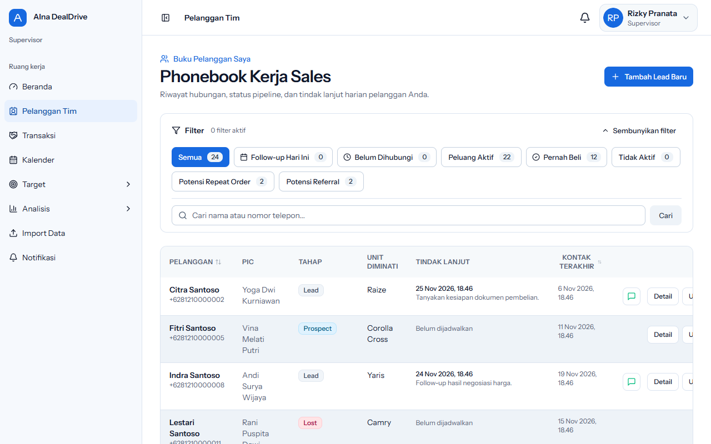
5. Transaksi tim
Halaman Transaksi menampilkan seluruh transaksi tim. Kolom Sales / Supervisor menunjukkan penanggung jawabnya.
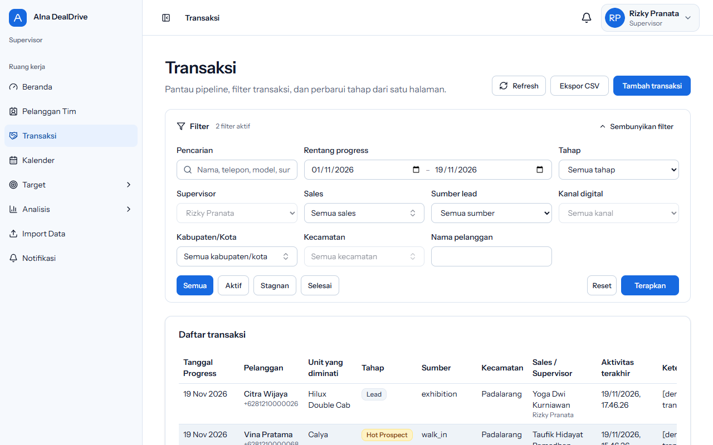
- Pilih Sales untuk melihat transaksi satu orang saja.
- Pilih tab Stagnan untuk melihat transaksi tanpa aktivitas lebih dari 3 hari.
- Filter lainnya (tahap, sumber lead, kanal digital, wilayah, rentang tanggal tahap) sama seperti di Manual Sales, bab 6. Klik Terapkan setelah memilih, atau Reset untuk menghapus filter.
- Klik Ekspor CSV untuk mengunduh daftar sesuai filter yang aktif.
6. Membuat lead untuk Sales
Supervisor dapat mencatat lead atas nama Sales di timnya, misalnya lead dari pameran atau telepon ke kantor. Langkahnya sama dengan Manual Sales, bab 5, dengan satu tambahan:
- Klik Tambah transaksi di halaman Transaksi, atau Tambah Lead Baru di Pelanggan Tim.
- Pada Sales penanggung jawab, klik Pilih Sales dan pilih Sales aktif di tim Anda. Kolom ini wajib.
- Isi data transaksi dan pelanggan, lalu klik Simpan transaksi.
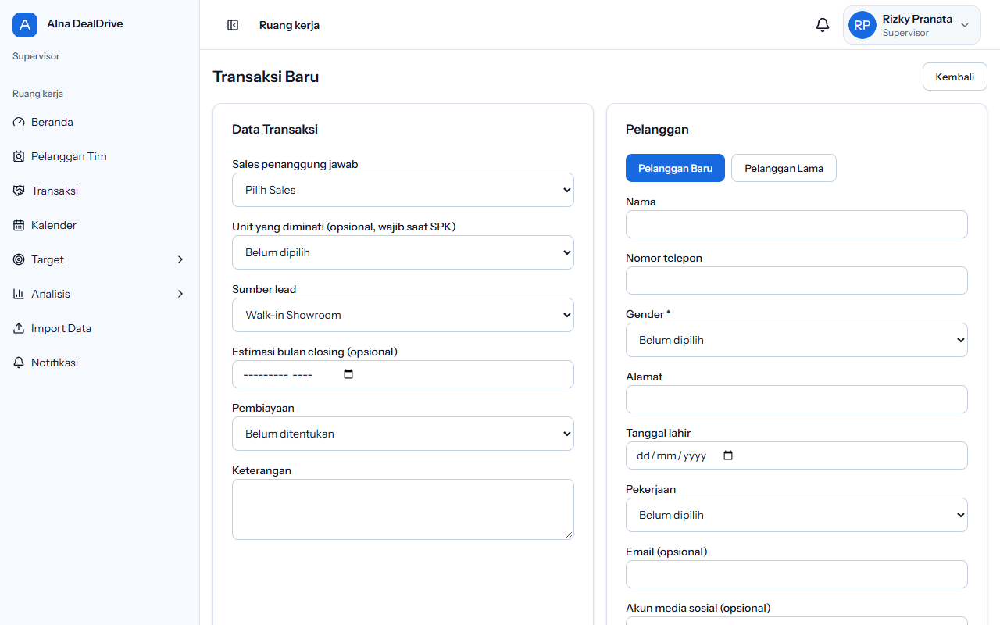
Lead menjadi tanggung jawab Sales yang dipilih. Anda tetap tercatat sebagai pembuatnya.
7. Mengganti PIC Sales
Bila tanggung jawab pelanggan perlu dipindahkan, misalnya karena Sales cuti panjang atau beban kerja tidak seimbang, ganti PIC-nya ke Sales lain di tim Anda.
- Buka detail transaksi pelanggan tersebut.
- Klik ikon Pelanggan di panel kanan.
- Pada Ganti PIC Sales, pilih Sales baru, lalu klik Ganti PIC.
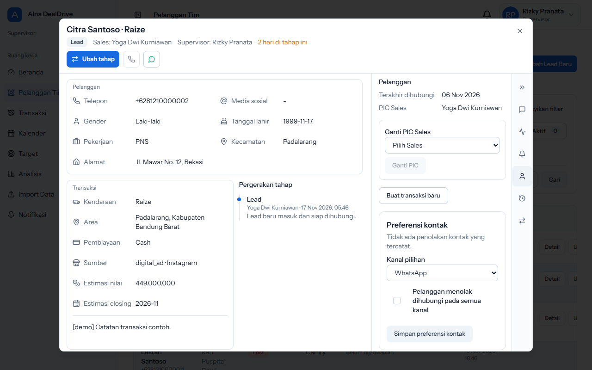
Sales baru langsung mendapat akses ke pelanggan itu. Riwayat penugasan lama tetap tersimpan. Pemindahan ke Sales di tim lain harus dilakukan Admin dealer.
8. Memberi coaching
Coaching adalah arahan Anda yang dicatat langsung pada transaksi, sehingga Sales dan Anda membaca konteks yang sama. Komentar hanya dapat dilihat oleh Sales terkait, Supervisor terkait, dan Admin.
- Buka detail transaksi, lalu klik ikon Komentar.
- Tulis arahan di Komentar baru, lalu klik Kirim komentar.
- Untuk menanggapi balasan Sales, klik Balas pada komentarnya.
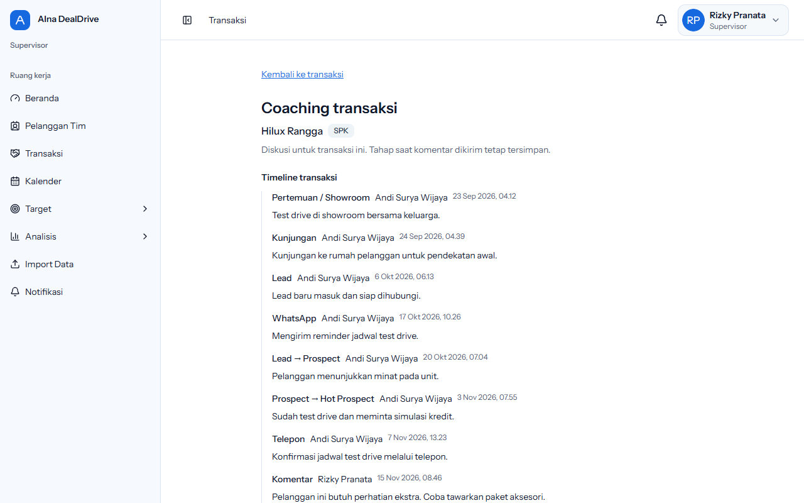
- Setiap komentar mencatat tahap transaksi saat dikirim (Saat dikirim: …).
- Komentar masih dapat diperbaiki dalam 5 menit setelah dikirim.
- Sales menerima pemberitahuan di aplikasi dan email. Email tidak memuat isi komentar.
Tulis arahan yang spesifik dan dapat dikerjakan, misalnya "Tawarkan simulasi kredit tenor 4 tahun sebelum Jumat", bukan "Tolong di-follow up".
9. Tahap dan DO
Supervisor dapat mencatat aktivitas, menjadwalkan follow-up, mengubah tahap, dan mencatat DO untuk transaksi timnya. Syarat setiap tahap sama untuk Sales dan Supervisor; lihat Manual Sales, bab 7 dan bab 8.
- DO hanya dapat dicatat dari SPK setelah PO, DP, dan Unit dikonfirmasi.
- DO adalah tahap akhir; setelah DO, tahap transaksi terkunci.
- Pembatalan DO hanya dapat dilakukan Admin dealer, pada bulan yang sama saat DO dicatat, dengan alasan.
10. Kalender tim
Kalender Supervisor menampilkan satu baris untuk setiap Sales aktif di tim Anda, sehingga Anda dapat melihat siapa yang punya rencana, siapa yang sudah mencatat aktivitas, dan siapa yang terlambat.
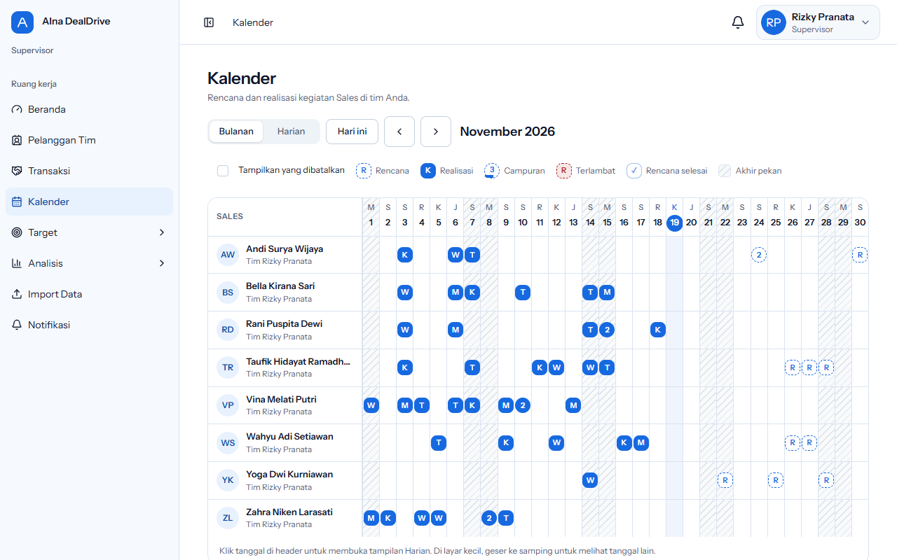
- Arti tanda (Rencana, Realisasi, Campuran, Terlambat, Rencana selesai, Dibatalkan) sama seperti di Manual Sales, bab 10.
- Klik tanggal di header untuk membuka tampilan Harian berisi rincian setiap kegiatan.
- Bila Anda membawahi lebih dari satu tim, pilih tim yang ingin dilihat.
- Centang Tampilkan yang dibatalkan untuk ikut melihat rencana yang dibatalkan beserta alasannya.
11. Target & Forecast
Buka Target → Target & Forecast untuk melihat dari mana angka forecast berasal dan posisi setiap Sales terhadap targetnya.
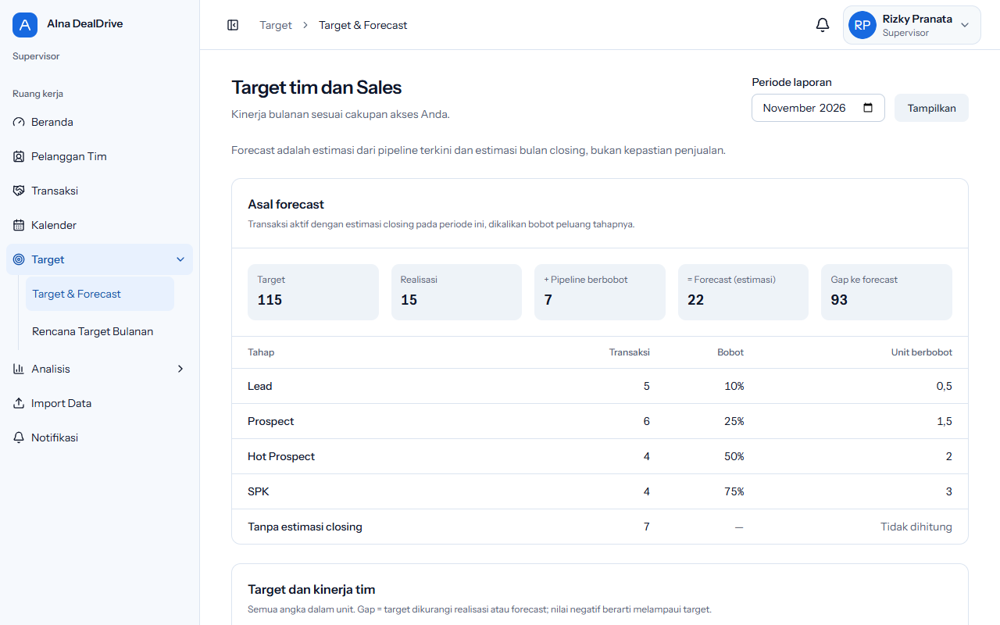
Cara forecast dihitung
Forecast = Realisasi + pipeline berbobot. Pipeline berbobot berasal dari transaksi aktif yang estimasi bulan closing-nya jatuh pada periode ini, dikalikan bobot tahapnya:
| Tahap | Bobot |
|---|---|
| Lead | 10% |
| Prospect | 25% |
| Hot Prospect | 50% |
| SPK | 75% |
| Tanpa estimasi closing | Tidak dihitung |
Contoh: 4 transaksi SPK × 75% = 3 unit berbobot. Forecast adalah estimasi dari kondisi pipeline saat ini, bukan kepastian penjualan. Forecast untuk bulan yang sudah lewat tidak tersedia.
Membaca tabel
- Target dan kinerja tim: target management, benchmark tim, total alokasi Sales, pencapaian, dan gap.
- Target dan kinerja Sales: target personal, realisasi, forecast, dan gap setiap Sales. Klik nama Sales untuk rincian forecast per tahap.
Gap ke forecast yang besar berarti pipeline tidak cukup untuk mengejar target. Dorong Sales menambah lead atau menaikkan tahap transaksi yang sudah ada.
12. Rencana Target Bulanan
Target bulanan disusun dalam tiga langkah: target management → benchmark tim → alokasi personal Sales.
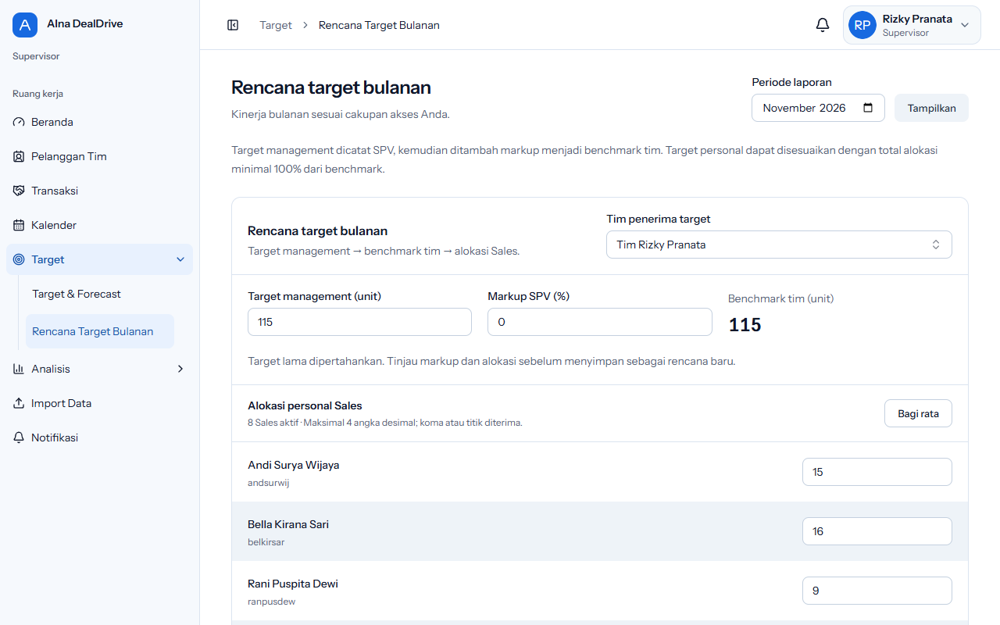
- Buka Target → Rencana Target Bulanan. Pilih bulan di Periode laporan, lalu klik Tampilkan.
- Pilih tim di Tim penerima target.
- Isi Target management (unit), yaitu target dari management.
- Isi Markup SPV (%) bila Anda ingin target internal tim lebih tinggi. Benchmark tim dihitung otomatis.
- Klik Bagi rata untuk membagi benchmark sama rata ke Sales aktif, lalu sesuaikan angka setiap Sales bila perlu. Angka desimal (maksimal 4 angka, koma atau titik) diterima.
- Pastikan Total alokasi minimal 100% dari benchmark, lalu klik Simpan rencana target.
- Perubahan belum tersimpan sebelum Anda menekan Simpan.
- Sales yang keluar dari tim tetap menyimpan target lamanya. Sales baru ditandai Anggota baru; tentukan targetnya sesuai kesiapan. Aplikasi menyarankan angka prorata dari sisa hari kerja.
- Target yang belum diisi dibedakan dari target nol.
- Sales hanya melihat target personalnya, bukan target management atau markup.
13. Analisis
Menu Analisis berisi empat laporan. Semuanya mengikuti cakupan tim Anda dan memakai Rentang bulan (Dari bulan – Sampai bulan).
Sumber & Model
Membandingkan sumber lead dan model kendaraan: jumlah, porsi, SPK, DO, dan conversion (DO dibagi jumlah lead).
- Mode tanggal Akuisisi memakai tanggal lead dibuat. Pencapaian memakai tanggal tahap sah: tanggal tahap yang gugur karena transaksi mundur tidak dihitung, termasuk untuk bulan sebelumnya.
- Di atas tabel ada grafik: ringkasan per tahap, alur dari sumber ke tahap terjauh, porsi sumber (donat), conversion per sumber, dan tahap per model (9 model teratas plus Lainnya). Pada mode Pencapaian, grafik alur dan conversion diganti grafik batang kejadian tahap.
- Klik Drilldown pada sebuah baris, atau klik bagian grafik (simpul atau pita alur, batang, irisan donat, atau baris legendanya), untuk melihat transaksi pembentuk angkanya. Baris Lainnya tidak dapat diklik.
- Unduh CSV untuk data mentah, atau Save as PDF / browser print untuk dicetak.
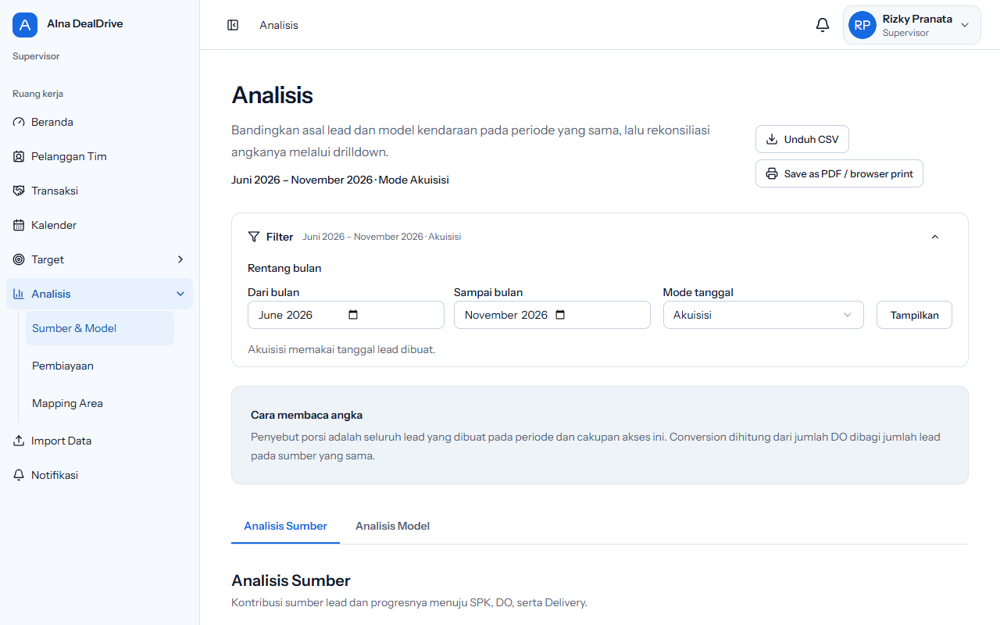
Pembiayaan
Komposisi Cash, Kredit, dan Belum ditentukan, serta leasing tujuan untuk transaksi Kredit. Pilih Dasar laporan: Prospek (bulan pertama masuk Prospect) atau Realisasi DO (bulan DO, dengan pembiayaan yang dikunci saat DO).
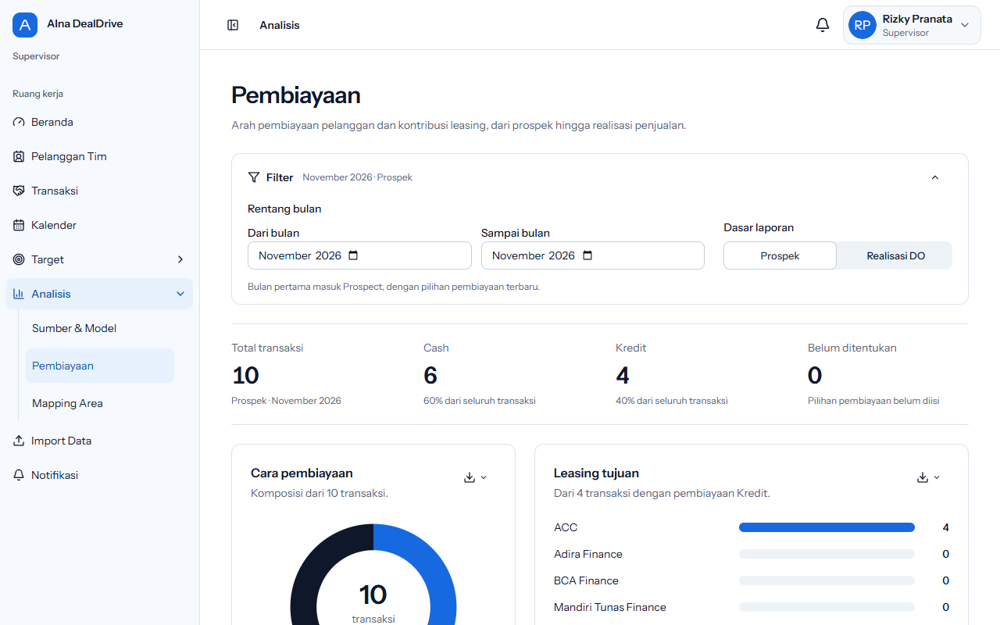
Mapping Area
Porsi DO dari FOA (kecamatan FOA dealer, ukuran penilaian dealer) dan dari PMA (kab/kota yang masih digarap, termasuk FOA), lengkap dengan tren per bulan, DO per kecamatan FOA dan DO per kab/kota. Setiap kartu bisa diunduh PNG atau CSV. Pengelompokan mengikuti kondisi saat DO, bukan daftar FOA/PMA terbaru.
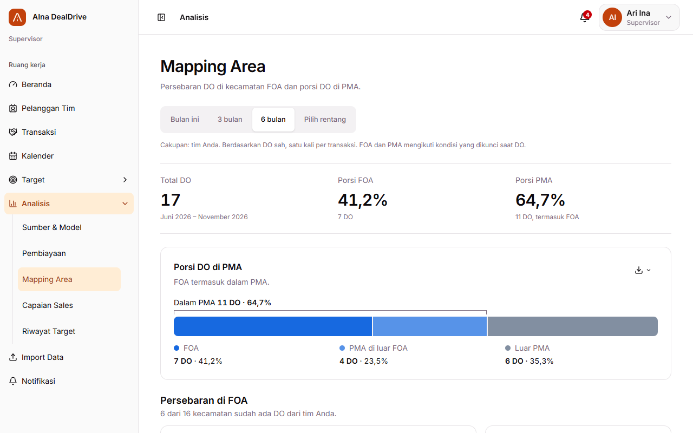
Capaian Sales
Tabel jumlah transaksi per tahap yang dicapai setiap Sales di tim Anda, berdasarkan tanggal tahap sah, untuk Rentang bulan yang dipilih. Tabel yang sama untuk bulan berjalan tampil di Beranda. Gunakan untuk melihat siapa yang sudah menghasilkan Prospect, SPK, atau DO pada periode tersebut, bukan hanya posisi tahap saat ini.
14. Import Data
Gunakan Import Data untuk memasukkan banyak lead sekaligus dari file CSV, misalnya daftar pengunjung pameran. Lead hanya dapat diimpor ke Sales di tim Anda.
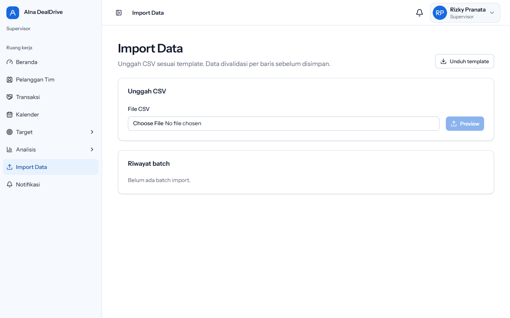
- Klik Unduh template dan isi file CSV tersebut. Jangan mengubah nama kolom.
- Kolom wajib:
name,phone,vehicle_model,source,sales_username, dangender. Isisales_usernamedengan username Sales penanggung jawab. - Pada Unggah CSV, pilih file (maksimal 2 MB), lalu klik Preview.
- Periksa preview. Setiap baris berstatus Valid atau Ditolak beserta alasannya.
- Klik Import … baris valid. Hanya baris valid yang disimpan.
Hasil setiap impor tercatat di Riwayat batch: nama file, status, jumlah total dan ditolak, pelaku, dan waktu.
Bila muncul pesan "Hasil impor belum dapat dipastikan", periksa Riwayat batch terlebih dahulu sebelum menekan Import lagi, agar data tidak masuk dua kali.
15. Notifikasi
Ikon lonceng dan halaman Notifikasi bekerja sama seperti untuk Sales (Manual Sales, bab 11): riwayat 3 hari terakhir, baik yang sudah maupun belum dibaca. Supervisor menerima notifikasi untuk:
| Label | Kapan muncul |
|---|---|
| Komentar coaching | Sales menulis komentar atau balasan di transaksi timnya. |
| Perubahan tahap | Sales di tim Anda mengubah tahap transaksi. Isinya hanya tahap lama dan tahap baru. |
| Stagnan | Satu ringkasan per hari berisi jumlah transaksi tim yang baru menjadi stagnan. Klik untuk membuka daftar Stagnan di halaman Transaksi, berisi semua transaksi tim yang sedang stagnan (tidak hanya bulan ini). |
| Rilis | Aplikasi diperbarui ke versi baru. Isi perubahannya ada di halaman Riwayat Rilis. |
16. Rutinitas harian
- Pagi: buka Beranda. Periksa Prioritas tindak lanjut: transaksi stagnan, komentar belum dibaca, dan peluang closing.
- Untuk transaksi stagnan: tulis coaching yang spesifik, atau ganti PIC bila Sales tidak dapat menanganinya.
- Siang: buka Kalender tim. Pastikan setiap Sales punya rencana follow-up dan tidak ada yang terlambat menumpuk.
- Mingguan: buka Target & Forecast. Bandingkan gap ke forecast setiap Sales, lalu atur prioritas coaching.
- Awal bulan: isi Rencana Target Bulanan sebelum Sales mulai bekerja.